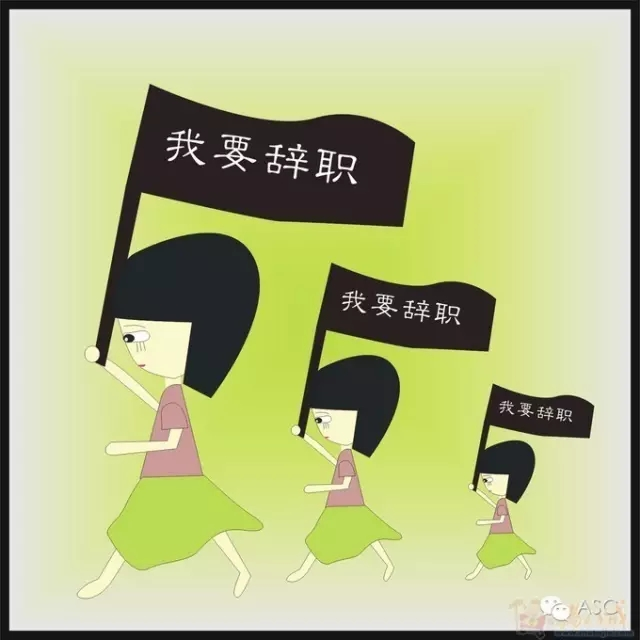
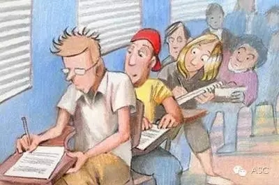

互惠动态
|
|
一件在中国绝不可能发生的事，在美国发生了……
在美国堪萨斯城郊发生了一件事，在全美国引起了轩然大波。事情起源于一位美国女教师因学生缺乏诚信，愤然辞职，从而导致了一连串的社会反应。
当时，在这位女教师所任教的高中，有一批高二的学生被要求完成一项生物课作业，而她班里有28名学生从互联网上抄袭了一些现成的材料。
本来批评一下学生，教育他们今后别犯这样的错误，就能大事化小，小事化无，而女教师却偏偏固执地认为，这些学生素质低下，才导致了他们去剽窃他人的劳动成果。因此，这位女教师不但将这28名学生的生物课成绩判为零分，并且还警告他们将要面临留级的危险。
学生们的试卷被判为零分后，引起了家长们的抱怨和反对，他们大动肝火，纷纷向学校施压，要求女教师重新评判这28名学生的生物课成绩。学校领导不堪重压，只得将矛头对准女教师，迫令她屈从。
然而这位女教师对于校方和家长们的要求严词拒绝，结果执拗不过，只得愤然辞职。

令校长始料不及的是，这位女教师的辞职，成了全市市民关注的焦点，引起了全社会的广泛关注。面对巨大的社会反响，校方不得不在学校体育馆举行公开会议，听取各方面的意见。
结果，绝大多数的与会者都支持女教师，学校领导见形势对己方不利，只得征求老师们的意见，结果该校近半数的老师表示，如果学校降格满足了少数家长修改成绩的要求，他们也将辞职。
他们认为：教育学生成为一名诚实的公民，远比通过一门生物课程更重要。于是，经过一番讨论和争辩，家长们只得让步，同意了对孩子们的留级"处分"。
后来，这位女教师的辞职，引起了接二连三的社会反应。她本人每天都能接到十几个聘请她去工作的电话，一些公司甚至给学校发传真，向学校索要作弊学生的名单，以确保他们的公司今后永不录用这些不诚实的学生。
某高校负责招生的老师在一次招生入学考试中，见到报考的考生中有位与作弊的学生同校的女生，语重心长地对她说：“不要搞欺骗啊！”
一位同作弊学生的家长住在一起的女士，对电视台的记者忧心忡忡地说：“我非常担心从我们这个社区出去的人，是否会被贴上不诚实的标签。”

一位美国商人在一次演讲中，借题发挥道：“一个人可以失去财富，失去职业，失去机会，但万万不可失去信誉。一个不信守信誉的人，在这个社会上常常举步维艰。"
我们无法取笑美国人的小题大做。倘若一个人失去了诚信，他就会变得尔虞我诈；一个企业要是失去了诚信，就会生产出假冒伪劣的商品；一个社会要是缺失了诚信，就会到处充斥着奸诈欺骗的小人。
美国人重视诚信，正如他们懂得诚信是一个人取信立足社会的根基，倘若这个人缺失了诚信，也就缺失了建立在此基础上的一切美德，他也只会危害社会，侵犯人类，也就不可能成就一番事业。
从堪萨斯城这位女教师的辞职事件，我们可以感悟出以下三点心得：
一.对于在互联网上抄袭一点资料用在作业上，这对我们来说是司空见惯的事情——可能不抄才认为是异类呢。我们的口头禅是“天下文章一大抄”。
这些年来爆料出来的河北大学、武汉理工科大学、华东师大、湖北工业大学、首都师范大学等高等学府的大量抄袭行为已让人触目惊心了。美国女教师对学生的处罚行为似乎有点小题大做，吹毛求疵？
不，正是因为有她这种“防微杜渐”的美国老师的严格导向，才有而今美国人的诚实“死脑筋”。
二.这位美国女教师的正义行为不是个人作战，而是有强大的社会力量做后盾：她的行为得到了绝大多数老师的支持，得到了全体市民的一致支持，也得到了广大企业公司的舆论支持。
如果没有全社会来坚守“诚实”的道德防线，那么女教师的行为也只能像流星闪过苍穹。反之，我们应该思考，如果我们不能集全社会的力量来开展一次至上而下的“人民战争”，诚实的风尚能回到我们生活中间吗？
三.所有参与抄袭资料的学生都成为了社会的“不良记忆”。
企业公司在招聘时会不要他；家长会教育孩子要谨慎同这些学生交往；这些学生所在的社区会因为他们贴上不诚实的标签。
正如上文中所说的一句经典：“一个人可以失去财富，失去职业，失去机会，但万万不可失去信誉。一个不信守信誉的人，在这个社会上常常举步维艰。”

关于互惠，您了解得够多么？
请外国学生来家庭照顾孩子，辅导孩子外语？
只了解这些是不够的！
获取更多信息请参考以下方式：
联系ASC：
电话：86-21-61116069(上海中心）
86-25-66065662（南京中心）
全国家庭均可申请！
手机：15601666586（可加微信）
Q Q：3259637585
微信：asc-center
邮箱：info@asc-center.com
网站：www.asc-aupair.com

感谢您对我们的关注